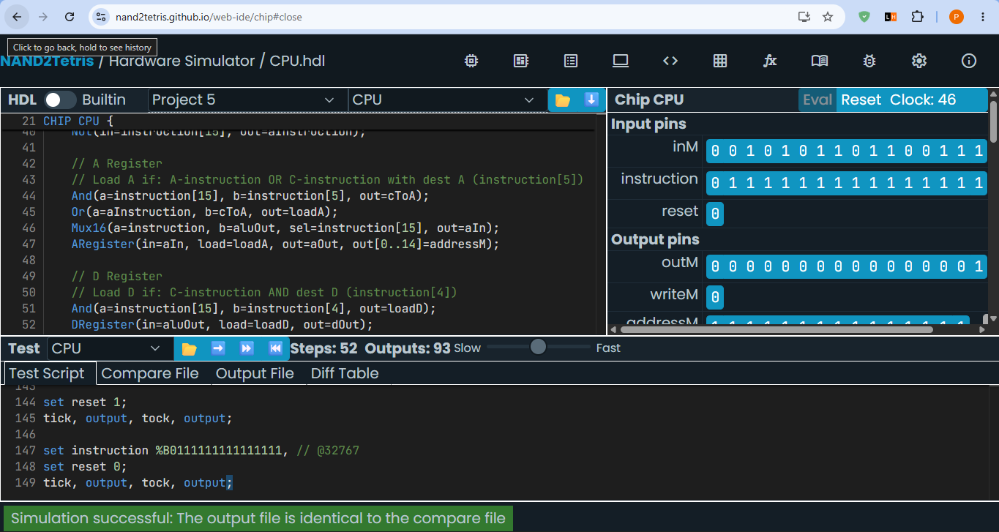
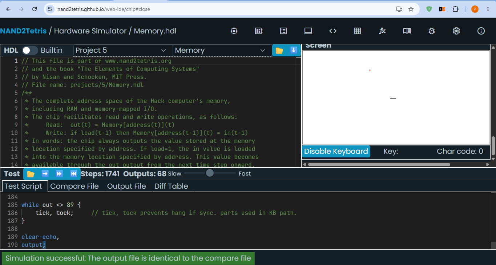
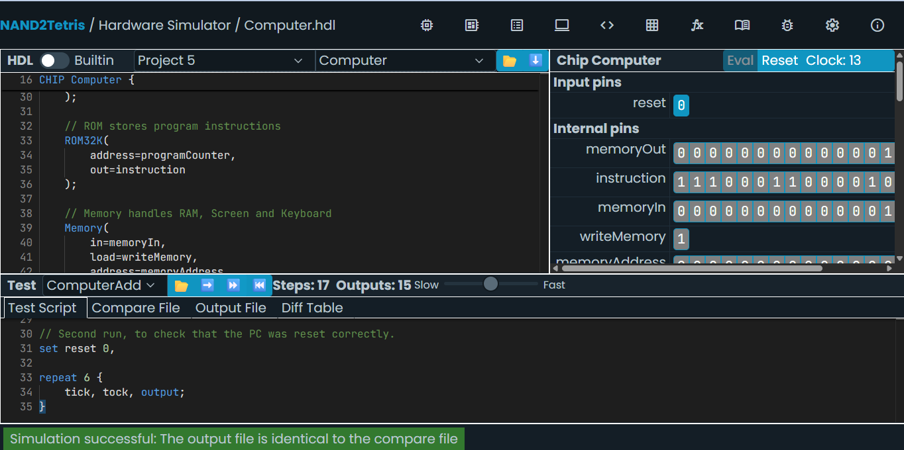
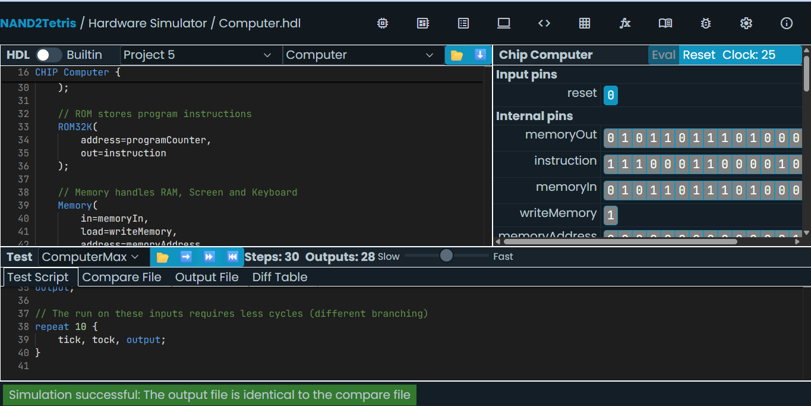
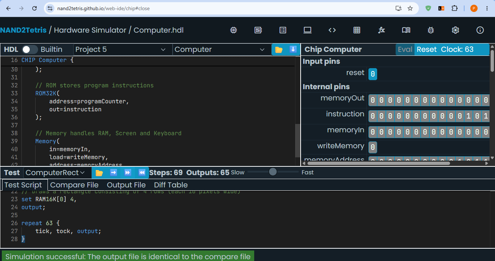
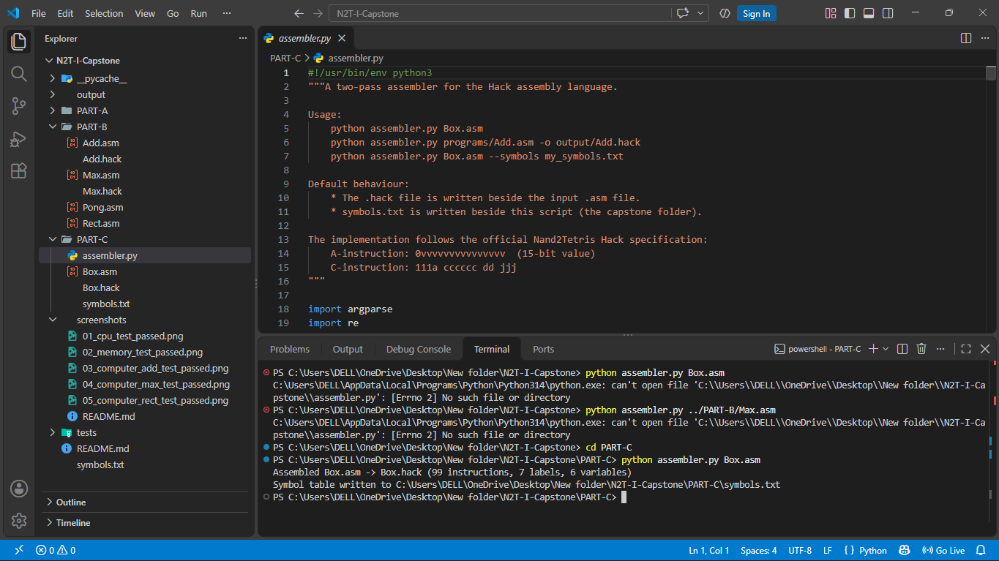
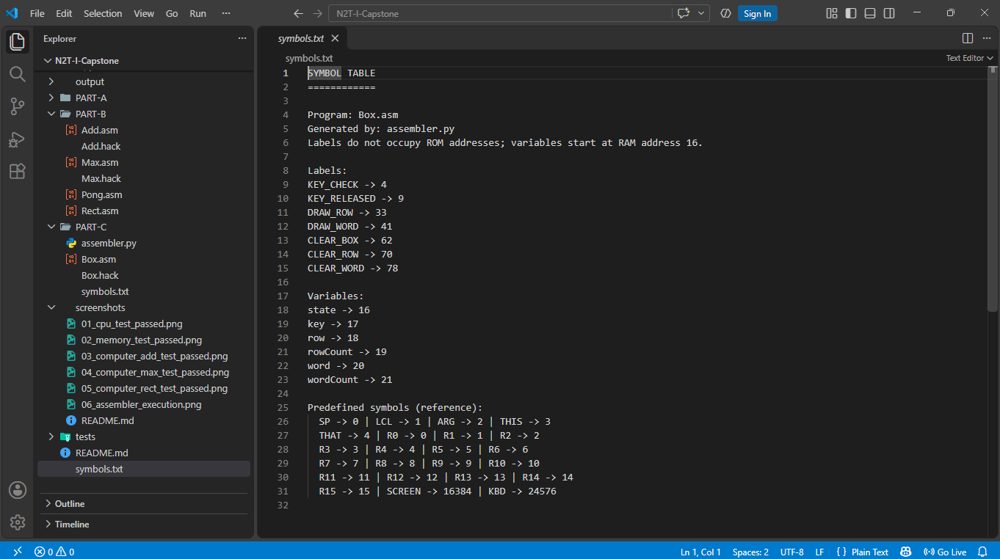
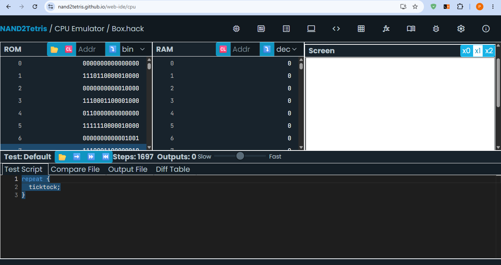

| Student roll number | 2501010187 |
|---|---|
| Personal number (K) | 87 (K mod 3 = 0, K mod 4 = 3) |
| Course | Computer Architecture / Hack Computer |
| Project title | Make the Computer Draw a Box |
| Submission | November 2026 |
Build a complete Hack computer from its HDL building blocks, write a two-pass assembler in Python, and use it to produce a personalised assembly program that draws a rectangle on the memory-mapped screen while a keyboard key is held down and clears it when the key is released. The geometry of the rectangle is derived from the student’s personal number K = 87.
The Hack computer is a 16-bit Harvard-architecture machine: program instructions are fetched from a 32K ROM, while data is read from and written to a separate 16K RAM. A single 16-bit instruction is either an A-instruction (a 15-bit constant or address) or a C-instruction (111a cccccc ddd jjj) that controls the ALU, the destination registers/memory and a conditional jump. The screen is memory-mapped at addresses 16384–24575 (512 × 256 pixels, 16 pixels per 16-bit word) and the keyboard is mapped at address 24576. Software therefore controls the display simply by writing words into screen memory.
| Property | Value | Derivation / implementation |
|---|---|---|
| Starting row | 87 | K = 87 |
| Starting screen address | 19168 | SCREEN + 32 × 87 |
| Box height / width | 20 rows × 64 pixels | rows 87–106; 4 words × 16 pixels |
| Draw / clear colour | 0xFFFF / 0x0000 | M=-1 / M=0 |
| Last word written | 19779 | 16384 + 32 × 106 + 3 |
| Assembler extra feature | symbols.txt | required because K mod 3 = 0 |
Deliverables: CPU.hdl, Memory.hdl, Computer.hdl (Part A); Add/Max/Rect/Pong programs (Part B); assembler.py, Box.asm, Box.hack, symbols.txt (Part C); tests and reference comparison files.
Three HDL chips were assembled into a working computer: CPU.hdl executes instructions, Memory.hdl implements the combined address space, and Computer.hdl connects them to a 32K ROM. The implementations follow the official Project 5 specification.
instruction[15] selects the instruction type. For an A-instruction the 15-bit literal is multiplexed into the A register; for a C-instruction the ALU result may be written to A. The D register is loaded only when the C-instruction destination bit 4 is set. instruction[12] selects A or M as the ALU’s y input; bits 11–6 select the ALU function, bits 5–3 the destination (A, D, M) and bits 2–0 the jump condition. The jump condition is formed from the ALU’s negative and zero flags, and the PC either loads A or increments (or resets to zero when reset=1).
DMux4Way decodes address[13..14] to route the load signal; Mux4Way16 selects the value read back. Addresses 0–16383 select RAM16K, 16384–24575 select the Screen chip and 24576 selects the Keyboard chip. Higher addresses are invalid and read zero.
| Address range | Selected device | Role in Box.asm |
|---|---|---|
| 0 – 16383 | RAM16K | variables state, key, row, rowCount, word, wordCount (16–21) |
| 16384 – 24575 | Screen (8K words) | 80 target words starting at 19168 |
| 24576 | Keyboard | key state is read from @KBD |
Instructions come from ROM32K(address=pc, out=instruction). The CPU receives inM from memory and emits outM, writeM and addressM; these drive the Memory chip. The instruction word returned by the ROM and the data word returned by Memory form the two feedback loops of the Harvard architecture.
| Script | Verifier message shown in the Web IDE | Result | Evidence |
|---|---|---|---|
| CPU.tst | Simulation successful: output file identical to compare file | Passed | S1 |
| Memory.tst | Simulation successful: output file identical to compare file | Passed | S2 |
| ComputerAdd.tst | Simulation successful: output file identical to compare file | Passed | S3 |
| ComputerMax.tst | Simulation successful: output file identical to compare file | Passed | S4 |
| ComputerRect.tst | Simulation successful: output file identical to compare file | Passed | S5 |





A symbolic assembler is required because humans write @row, (DRAW_WORD) and M=-1, whereas the Hack ROM accepts only 16-bit binary words. assembler.py translates one .asm file into one .hack file with one binary word per line.
Symbol support. Predefined symbols are SP, LCL, ARG, THIS, THAT, R0–R15, SCREEN=16384, KBD=24576. The destination field accepts any order of A, D and M (for example DM=M+1 as used in the official Pong.asm), matching the official assembler. The 28 computations, 8 destinations and 8 jumps use the official lookup tables embedded in the script.
Because K mod 3 = 0, every assembler run also writes a human-readable symbols.txt next to the script. Labels and variables are separated and sorted by address, followed by the predefined symbols. Running the assembler on PART-C/Box.asm produced the report summarised below.
| Labels (ROM address) | Value |
|---|---|
| KEY_CHECK | 4 |
| KEY_RELEASED | 9 |
| DRAW_ROW | 33 |
| DRAW_WORD | 41 |
| CLEAR_BOX | 62 |
| CLEAR_ROW | 70 |
| CLEAR_WORD | 78 |
| Variables (RAM address) | Value |
|---|---|
| state | 16 |
| key | 17 |
| row | 18 |
| rowCount | 19 |
| word | 20 |
| wordCount | 21 |
| Output: 99 instructions, 7 labels, 6 variables | |


Verification: 33/33 Python unit tests pass, including byte-for-byte agreement of symbolic Max.asm, Rect.asm and Pong.asm with the official symbol-less (*L.asm) reference programs.
Each screen row occupies 32 consecutive words, so a 64-pixel (4-word) box cannot be written as 80 consecutive addresses. The program therefore uses nested loops: an outer loop over 20 rows (row address += 32) and an inner loop over 4 words (word address += 1). It writes exactly 80 words and nothing else.
Drawing writes M=-1 (0xFFFF, all 16 pixels black); clearing writes M=0 (white) to the same 80 addresses. Both paths begin at 19168 with counters 20 and 4, and use D;JGT loop tests. The machine code was produced by the project’s own assembler: python PART-C/assembler.py PART-C/Box.asm → 99 instructions; the regenerated file is byte-identical to the submitted Box.hack.

Functional verification. In addition to the emulator view, a Python reference Hack interpreter in tests/test_box.py confirmed: no writes while idle; exactly 80 words set to 0xFFFF on key press; exactly the same 80 words set to 0 on release; and no writes outside the box. A repeat press was also verified.
S6 records an actual failure: running python assembler.py Box.asm from the repository root produced can't open file … / [Errno 2] No such file or directory because assembler.py and Box.asm live in PART-C. The fix was cd PART-C before running the command, after which the assembly succeeded. A related follow-up during report preparation updated the test scripts’ file paths for the PART-A/PART-B/PART-C layout, after which all 33 tests passed again.
The capstone delivered all three requested parts: an HDL Hack computer, a standards-compliant two-pass assembler with the personalised symbols.txt feature required by K mod 3 = 0, and a keyboard-controlled box program personalised by K = 87. Official HDL scripts passed in the Nand2Tetris Web IDE (S1–S5), 33 automated Python tests passed, and the generated machine code was verified both against official reference programs and with a functional interpreter that checked the draw, clear and repeat-press cycles.